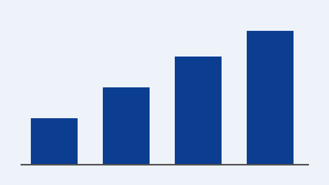

業務改善の進め方（長尺型サンプル）
サンプル株式会社（架空）の社内説明用 Web 図解
1. 現状の課題
資料を PowerPoint と Web の両方で作ると、修正が片方にしか反映されず二重作業になります。
- 同じ内容を 2 回作り直している
- 修正の反映漏れが起きる
- 会議資料と社内ポータルで内容が食い違う
- どちらが最新か分からない
- 非エンジニアが変換ツールを使えない
2. 提案する仕組み
共通の中間形式（Presentation JSON）を介して双方向に変換します。
- PowerPoint を解析して JSON にする
- JSON から Web 図解を生成する
- Web 図解を解析して JSON にする
- JSON から PowerPoint を生成する
AI は構造理解と分類を担当し、座標計算とファイル生成は決定的なプログラムが行う。
3. 効果の見込み（架空データ）

| 指標 | 現状 | 導入後（試算） |
|---|---|---|
| 資料作成時間 | 4 時間 | 2 時間 |
| 修正反映漏れ | 月 5 件 | 月 0〜1 件 |
| Web 公開までの日数 | 3 日 | 当日 |
4. 次のステップ
MVP を小さな縦切りで実装し、サンプル資料で往復変換を確認します。未対応要素は警告と代替処理で止めない方針です。
- サンプル PPTX / HTML での E2E 試験
- 文字切れ・重なり・画像歪みの自動検査
- README と試験結果の整備